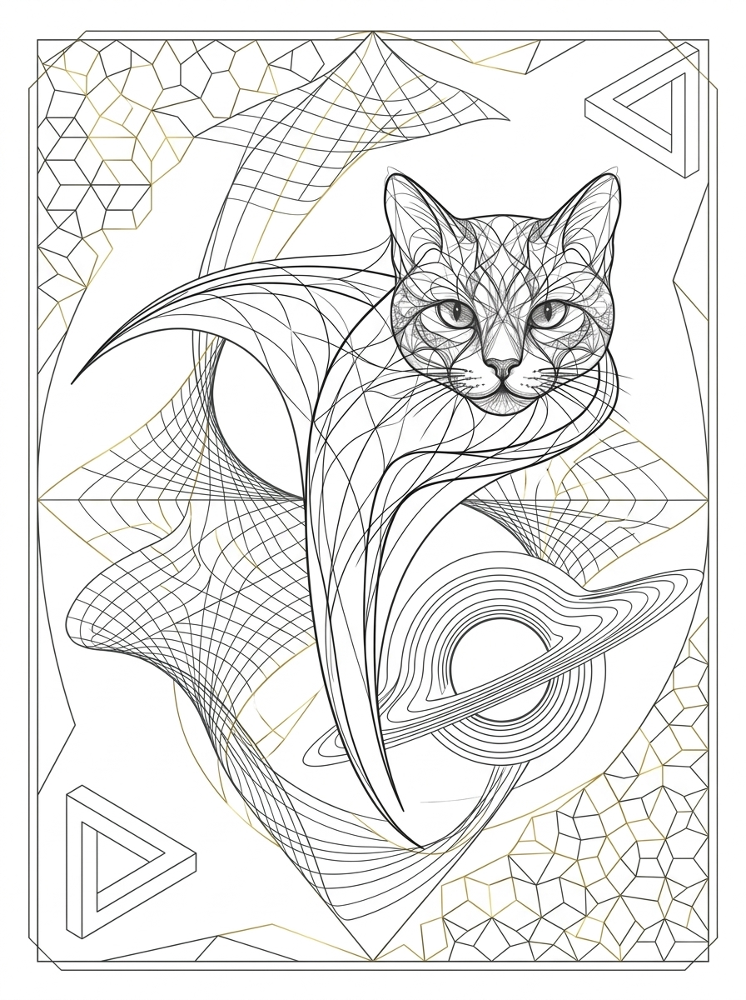

Felis Noetica
INTELLIGENTIA ET CONCORDIA
Cattery of European Shorthair Cats (FIFe reg. no. 7944)
This officially certifies the origin, name, and honorary godparenthood of
Penrose
Penrose of Felis Noetica
ID: FS01-G02-M006
Sex: Male (♂)
Date of Birth: 27 July 2026
Coat: Solid Black (o/Y s/s b/b)
Dam: Sofie (G1, O/o S/s)
Sire: Tomcat from Runářov (G1, S/s)
🌌 Meaning & Dedication: Sir Roger Penrose OM FRS
Named on 8 August 2026 on the occasion of Sir Roger Penrose OM FRS turning ninety-five, in honor of his discovery that black hole formation is a robust prediction of the general theory of relativity (Nobel Prize in Physics 2020), as well as his pioneering work on Penrose tilings, twistor theory, and quantum consciousness. This kitten embodies deep curiosity, elegance, and the quiet mystery of invisible horizons.
 Viktor Lošťák
Viktor LošťákBreeder / Felis Noetica
Digital pedigree and verification
FIFe reg. no. 7944 · ČSCH reg. no. 30214 · A VIRTÙ RESEARCH & TECHNOLOGIES s.r.o.